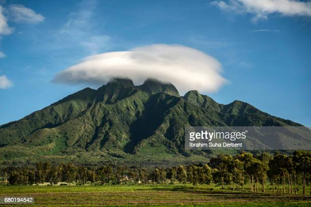

Volcanoes National Park
“In the heart of Central Africa, so high up that you shiver more than you sweat,” wrote the eminent primatologist Dian Fossey, “are great, old volcanoes towering almost 15,000 feet, and nearly covered with rich, green rainforest – the Virungas.”
Lion
Gorilla

Tourist

Volcanoes National Park
The eastern border of Rwanda, along Lake Victoria and Tanzania, is the location of Akagera National Park and protects a variety of African fauna in a savannah ecosystem, including giraffes, elephant, buffalo, baboons, gazelles and zebra. [5] Lions also inhabited the park, but were exterminated by poisoning during and after the Rwandan genocide. However, in 2015, seven lions were reintroduced to Akagera, and the population has since increased to almost 40 individuals.
Join Us